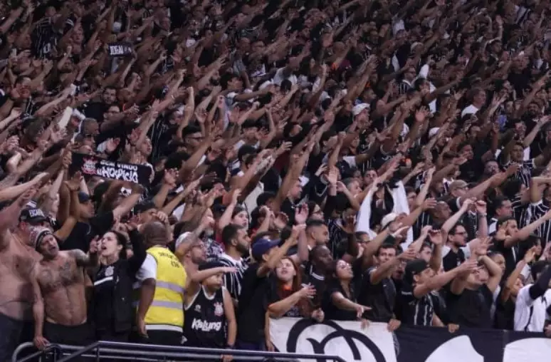
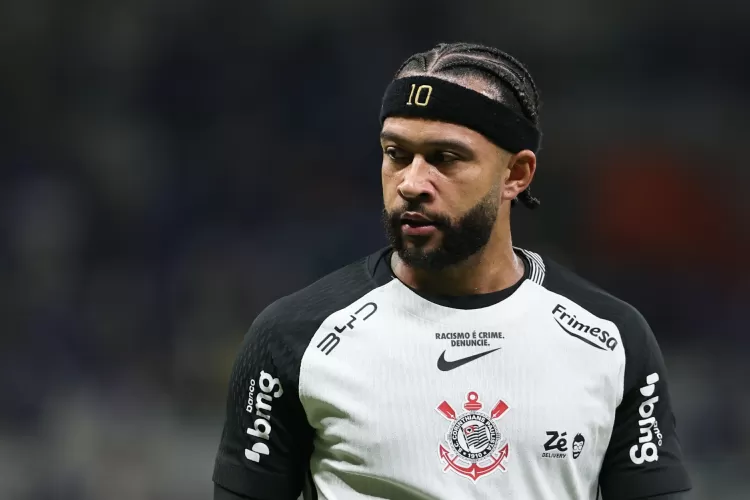
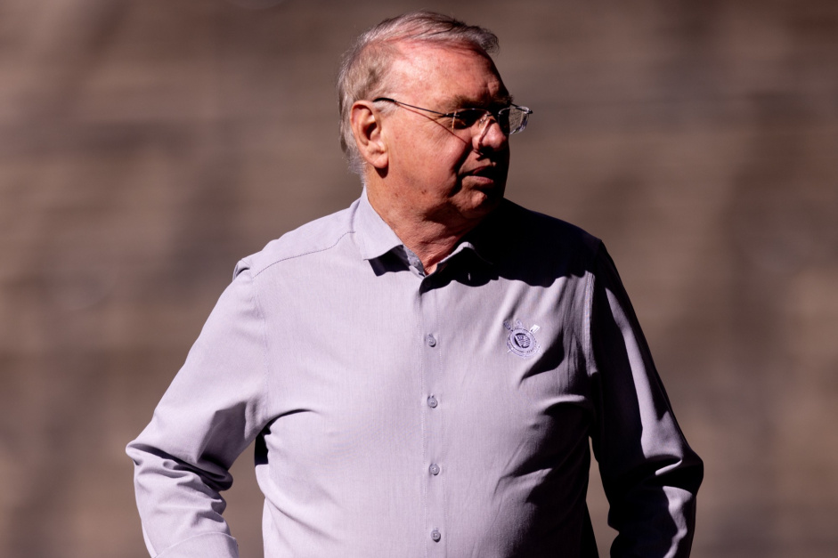
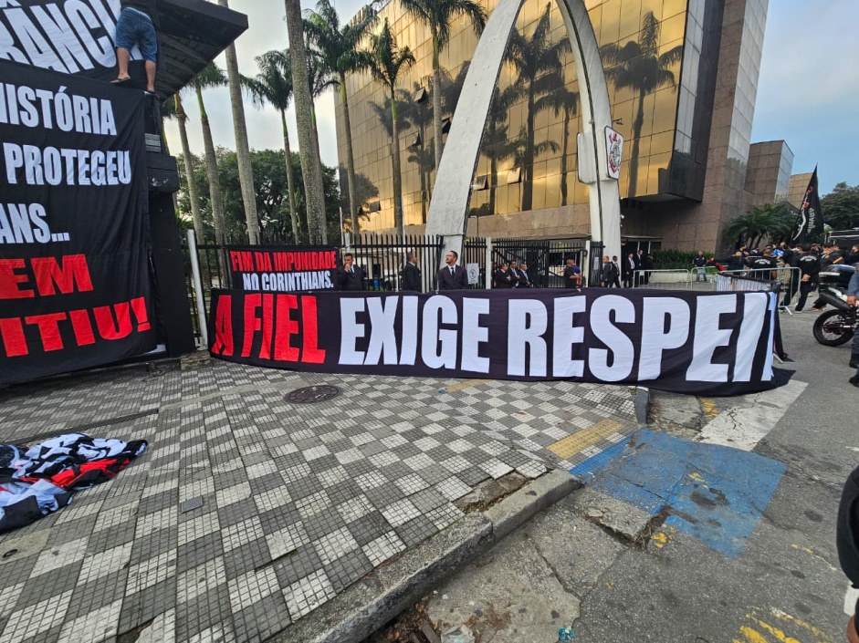

Lateral retorna ao Corinthians após empréstimo para clube da Série B

Lateral retorna ao Corinthians após empréstimo para clube da Série B
Tironi no Lance!: Corinthians perde uma arma poderosa, o seu gramado

Corinthians perde um dos melhores gramados do país
Yuri Alberto perde gol, sai machucado, e Corinthians empata com o Athletico

Yuri Alberto sai lesionado durante partida contra o Athletico
Corinthians confia em renovação de Memphis mesmo com o fim do contrato hoje

Corinthians acredita que Memphis seja fundamental para o time
Corinthians: Zakaria Labyad tem suspeita de lesão de ligamento cruzado após testes na Neo Química Arena

Zakaria Labyad tem suspeita de lesão de ligamento cruzado durante o jogo com o Athletico
Gaviões da Fiel protesta contra diretoria e acusa Corinthians de censura

Gaviões da Fiel protestam contra diretoria do Corinthians apos serem censurados
Corinthians: Gaviões apoia renovação de Memphis mesmo com pressão política

Mesmo com toda pressao vinda da diretoria, Gaviões continuam a apoiar Memphis
Gaviões da Fiel vai ao Parque São Jorge e cobra presidente do Corinthians por SAF e transfer ban

Presidente do Corinthians é cobrado por torcedores por SAF e transfer ban
Memphis se reúne com torcedores organizados, diz que quer ficar no Corinthians e aceita rever salário

Memphis quer permanecer no Corinthians e aceita rever seu salário
Gaviões da Fiel celebra expulsão de Augusto Melo e promete fiscalizar atual gestão do Corinthians

Gaviões da Fiel promete fiscalizar atual gestão do Corinthians, após presidente polemico